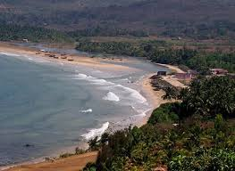
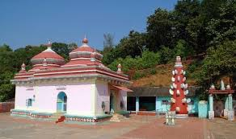

Guhagar is a serene coastal town in Maharashtra’s Ratnagiri district, famous for its untouched beaches, temples, and lush coconut groves.

A pristine white-sand beach stretching for miles along the Arabian Sea.
An ancient Shiva temple that serves as a major spiritual center in the region.

Known for its unique white marble idol of Lord Ganesha.
rating: 4.5 | Beachside stay with scenic sunset views.
rating: 4.2 | Comfortable rooms surrounded by nature.